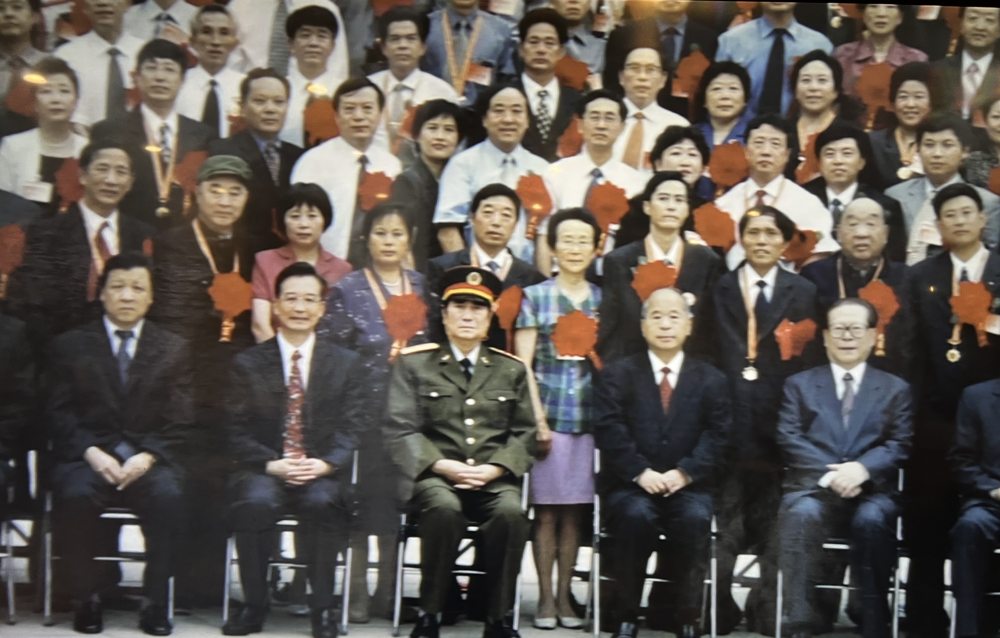
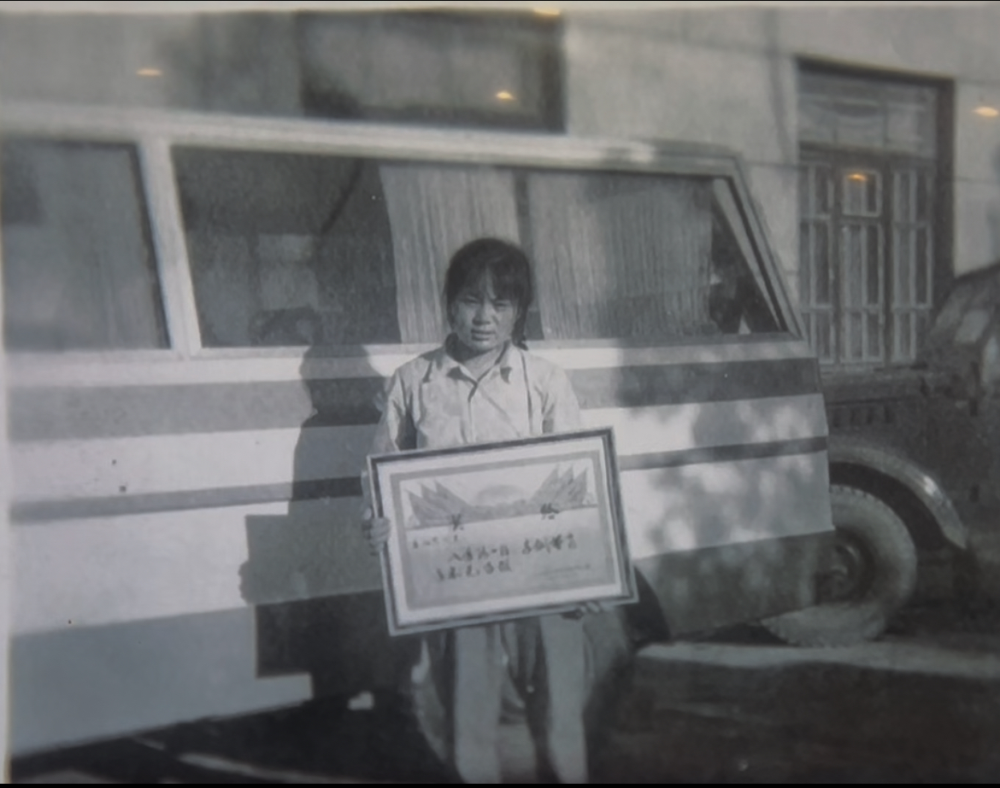

Rights
"Everyone has the right: To choose whether to have children or not. To decide freely the number, spacing and timing of children" — World Health Organization, 2022
"Officials would kidnap you if you tried to have two children." — Lu Bilun, 2021
“Giving birth is a fundamental human right. In China, the government controls it." — Harry Wu, Laogai Research Foundation, 2004
Responsibilities

Courtesy of One Child Nation

Courtesy of One Child Nation
"The one child policy has made the country more powerful, the people more prosperous, and the world more peaceful." — The Communist Party